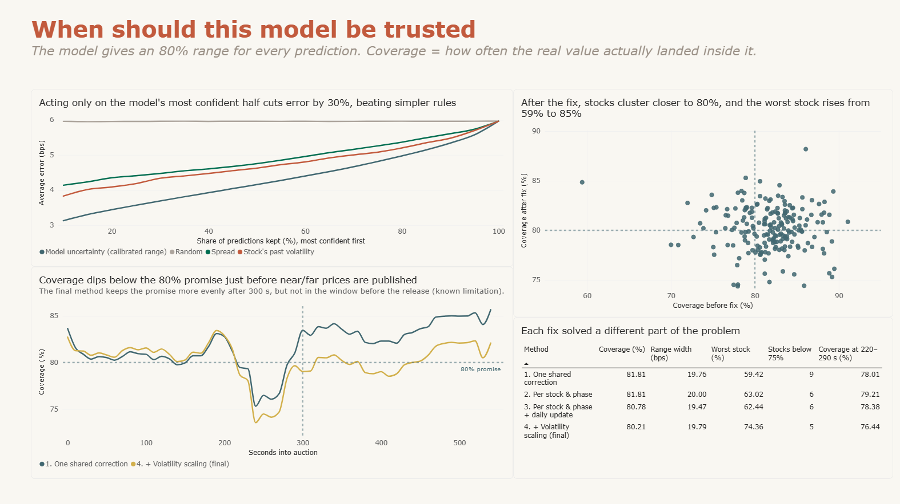
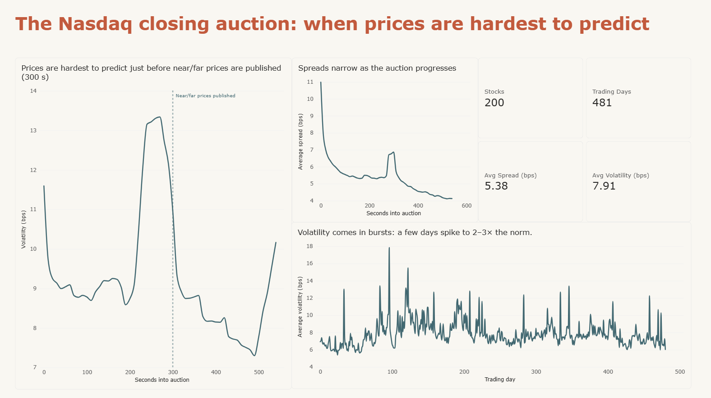
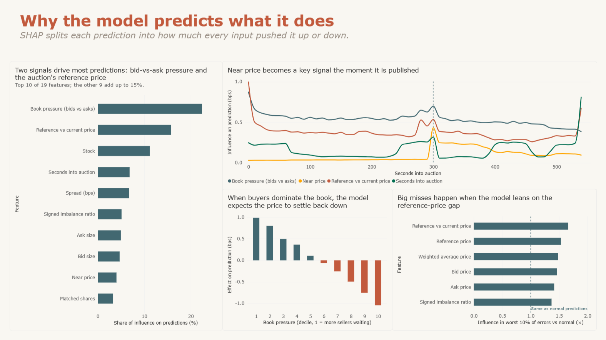

An analysis of the Nasdaq closing auction for 200 stocks over 481 trading days, using Optiver's Kaggle data. It asks where prices are hardest to predict, where a baseline model fails, why it predicts what it does, and when it can be trusted.
LightGBM · SHAP · Conformal prediction · Power BI · Market microstructure

The closing auction sets one price per stock at the end of the trading day. In the last ten minutes, Nasdaq publishes the order imbalance and indicative prices. Optiver asked for each stock's 60-second move relative to an index of all stocks. I wanted to know when that move is hardest to predict, and when a model's prediction deserves trust.

Figure 1. Volatility peaks at 270 seconds, just before near and far prices are first published at 300 seconds.
I trained LightGBM on days 0-383 and tested it on days 384-480, so it never saw the future. It beat a "predict zero" guess by 1.6% in mean absolute error (5.96 vs 6.06 bps). That small gain is honest: most of a 60-second move is noise. Errors spike in the same window before 300 seconds, and for 20 of 200 stocks the model did worse than predicting zero.

Figure 2. SHAP shows that bid-versus-ask book pressure and the reference-price gap drive most predictions.
Quantile regression with conformal calibration gives an 80% range for each prediction. Acting only on the most confident half cut error by 30%, beating rules based on a stock's past volatility or spread. Coverage failed for some stocks, and I traced this to stocks whose volatility jumped after calibration (r = -0.69). Per-stock calibration, a daily update and volatility scaling lifted the worst stock from 59% to 74%.
The window just before the 300-second release is still under-covered. Calibration cannot fix that; the model would need a signal that anticipates the release. The test period was calmer than training, so results may not hold in a more volatile market.